The precrec package provides accurate computations of
ROC and Precision-Recall curves.
1. Basic functions
The evalmod function calculates ROC and Precision-Recall
curves and returns an S3 object.
library(precrec)
# Load a test dataset
data(P10N10)
# Calculate ROC and Precision-Recall curves
sscurves <- evalmod(scores = P10N10$scores, labels = P10N10$labels)S3 generics
The R language specifies S3 objects and S3 generic functions as part
of the most basic object-oriented system in R. The precrec
package provides nine S3 generics for the S3 object created by the
evalmod function.
| S3 generic | Package | Description |
|---|---|---|
| base | Print the calculation results and the summary of the test data | |
| as.data.frame | base | Convert a precrec object to a data frame |
| plot | graphics | Plot performance evaluation measures |
| autoplot | ggplot2 | Plot performance evaluation measures with ggplot2 |
| fortify | ggplot2 | Prepare a data frame for ggplot2 |
| auc | precrec | Make a data frame with AUC scores |
| part | precrec | Set partial curves and calculate AUC scores |
| pauc | precrec | Make a data frame with pAUC scores |
| auc_ci | precrec | Calculate confidence intervals of AUC scores |
Example of the autoplot function
The autoplot function outputs ROC and Precision-Recall
curves by using the ggplot2 package.
# The ggplot2 package is required
library(ggplot2)
# Show ROC and Precision-Recall plots
autoplot(sscurves)
# Show a Precision-Recall plot
autoplot(sscurves, "PRC")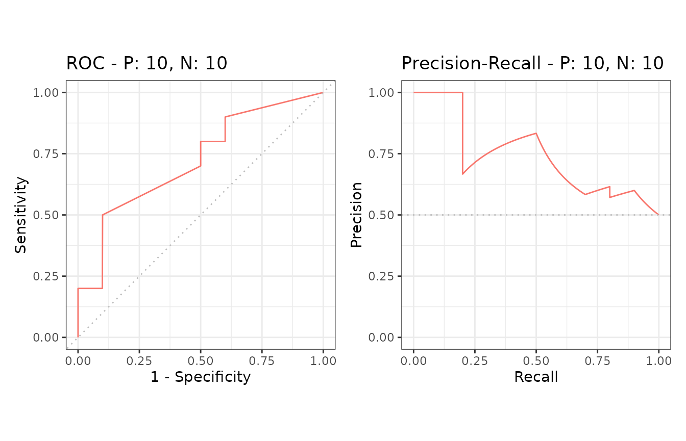
Reduced supporting points make the plotting speed faster for large data sets.
# 5 data sets with 50000 positives and 50000 negatives
samp1 <- create_sim_samples(5, 50000, 50000)
# Calculate curves
eval1 <- evalmod(scores = samp1$scores, labels = samp1$labels)
# Reduced supporting points
system.time(autoplot(eval1))
# Full supporting points
system.time(autoplot(eval1, reduce_points = FALSE))## user system elapsed
## 0.062 0.008 0.070
## user system elapsed
## 0.553 0.028 0.582Example of the auc function
The auc function outputs a data frame with the AUC (Area
Under the Curve) scores.
# Get a data frame with AUC scores
aucs <- auc(sscurves)
# Use knitr::kable to display the result in a table format
knitr::kable(aucs)| modnames | dsids | curvetypes | aucs |
|---|---|---|---|
| m1 | 1 | ROC | 0.7200000 |
| m1 | 1 | PRC | 0.7397716 |
| modnames | dsids | curvetypes | aucs | |
|---|---|---|---|---|
| 2 | m1 | 1 | PRC | 0.7397716 |
Example of the as.data.frame function
The as.data.frame function converts a precrec object to
a data frame.
# Convert sscurves to a data frame
sscurves.df <- as.data.frame(sscurves)
# Use knitr::kable to display the result in a table format
knitr::kable(head(sscurves.df))| x | y | modname | dsid | type |
|---|---|---|---|---|
| 0.000 | 0.0 | m1 | 1 | ROC |
| 0.000 | 0.1 | m1 | 1 | ROC |
| 0.000 | 0.2 | m1 | 1 | ROC |
| 0.001 | 0.2 | m1 | 1 | ROC |
| 0.002 | 0.2 | m1 | 1 | ROC |
| 0.003 | 0.2 | m1 | 1 | ROC |
2. Data preparation
The precrec package provides four functions for data
preparation.
| Function | Description |
|---|---|
| join_scores | Join scores of multiple models into a list |
| join_labels | Join observed labels of multiple test datasets into a list |
| mmdata | Reformat input data for performance evaluation calculation |
| create_sim_samples | Create random samples for simulations |
Example of the join_scores function
The join_scores function combines multiple score
datasets.
s1 <- c(1, 2, 3, 4)
s2 <- c(5, 6, 7, 8)
s3 <- matrix(1:8, 4, 2)
# Join two score vectors
scores1 <- join_scores(s1, s2)
# Join two vectors and a matrix
scores2 <- join_scores(s1, s2, s3)Example of the join_labels function
The join_labels function combines multiple score
datasets.
l1 <- c(1, 0, 1, 1)
l2 <- c(1, 0, 1, 1)
l3 <- c(1, 0, 1, 0)
# Join two label vectors
labels1 <- join_labels(l1, l2)
labels2 <- join_labels(l1, l3)Example of the create_sim_samples function
The create_sim_samples function is useful to make a
random sample dataset with different performance levels.
| Level name | Description |
|---|---|
| random | Random |
| poor_er | Poor early retrieval |
| good_er | Good early retrieval |
| excel | Excellent |
| perf | Perfect |
| all | All of the above |
# A dataset with 10 positives and 10 negatives for the random performance level
samps1 <- create_sim_samples(1, 10, 10, "random")
# A dataset for five different performance levels
samps2 <- create_sim_samples(1, 10, 10, "all")
# A dataset with 20 samples for the good early retrieval performance level
samps3 <- create_sim_samples(20, 10, 10, "good_er")
# A dataset with 20 samples for five different performance levels
samps4 <- create_sim_samples(20, 10, 10, "all")3. Multiple models
The evalmod function calculate performance evaluation
for multiple models when multiple model names are specified with the
mmdata or the evalmod function.
Data preparation
There are several ways to create a dataset with the
mmdata function for multiple models.
# Use a list with multiple score vectors and a list with a single label vector
msmdat1 <- mmdata(scores1, labels1)
# Explicitly specify model names
msmdat2 <- mmdata(scores1, labels1, modnames = c("mod1", "mod2"))
# Use a sample dataset created by the create_sim_samples function
msmdat3 <- mmdata(samps2[["scores"]], samps2[["labels"]],
modnames = samps2[["modnames"]]
)ROC and Precision-Recall calculations
The evalmod function automatically detects multiple
models.
# Calculate ROC and Precision-Recall curves for multiple models
mscurves <- evalmod(msmdat3)S3 generics
All the S3 generics are effective for the S3 object generated by this approach.
# Show ROC and Precision-Recall curves with the ggplot2 package
autoplot(mscurves)Example of the as.data.frame function
The as.data.frame function also works with this
object.
# Convert mscurves to a data frame
mscurves.df <- as.data.frame(mscurves)
# Use knitr::kable to display the result in a table format
knitr::kable(head(mscurves.df))| x | y | modname | dsid | type |
|---|---|---|---|---|
| 0.000 | 0.0 | random | 1 | ROC |
| 0.000 | 0.1 | random | 1 | ROC |
| 0.000 | 0.2 | random | 1 | ROC |
| 0.000 | 0.3 | random | 1 | ROC |
| 0.001 | 0.3 | random | 1 | ROC |
| 0.002 | 0.3 | random | 1 | ROC |
4. Multiple test sets
The evalmod function calculate performance evaluation
for multiple test datasets when different test dataset IDs are specified
with the mmdata or the evalmod function.
Data preparation
There are several ways to create a dataset with the
mmdata function for multiple test datasets.
ROC and Precision-Recall calculations
The evalmod function automatically detects multiple test
datasets.
# Calculate curves for multiple test datasets and keep all the curves
smcurves <- evalmod(smmdat2, raw_curves = TRUE)S3 generics
All the S3 generics are effective for the S3 object generated by this approach.
# Show an average Precision-Recall curve with the 95% confidence bounds
autoplot(smcurves, "PRC", show_cb = TRUE)
# Show raw Precision-Recall curves
autoplot(smcurves, "PRC", show_cb = FALSE)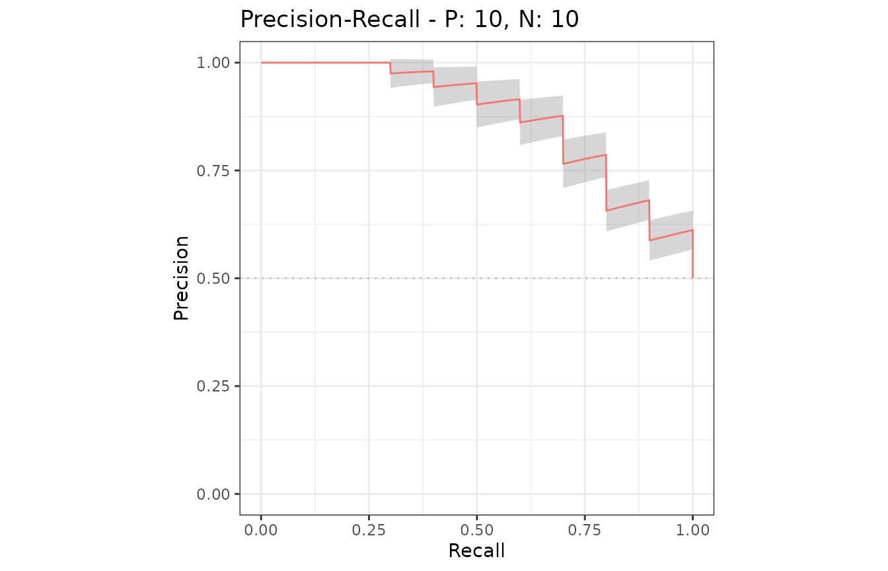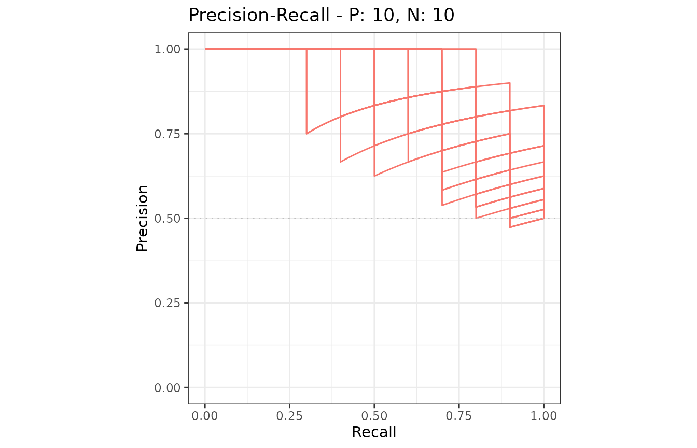
Example of the as.data.frame function
The as.data.frame function also works with this
object.
# Convert smcurves to a data frame
smcurves.df <- as.data.frame(smcurves)
# Use knitr::kable to display the result in a table format
knitr::kable(head(smcurves.df))| x | y | modname | dsid | type |
|---|---|---|---|---|
| 0.000 | 0 | m1 | 1 | ROC |
| 0.001 | 0 | m1 | 1 | ROC |
| 0.002 | 0 | m1 | 1 | ROC |
| 0.003 | 0 | m1 | 1 | ROC |
| 0.004 | 0 | m1 | 1 | ROC |
| 0.005 | 0 | m1 | 1 | ROC |
5. Multiple models and multiple test sets
The evalmod function calculates performance evaluation
for multiple models and multiple test datasets when different model
names and test dataset IDs are specified with the mmdata or
the evalmod function.
Data preparation
There are several ways to create a dataset with the
mmdata function for multiple models and multiple
datasets.
# Specify model names and test dataset IDs names
mmmdat1 <- mmdata(scores1, labels2,
modnames = c("mod1", "mod2"),
dsids = c(1, 2)
)
# Use a sample dataset created by the create_sim_samples function
mmmdat2 <- mmdata(samps4[["scores"]], samps4[["labels"]],
modnames = samps4[["modnames"]], dsids = samps4[["dsids"]]
)ROC and Precision-Recall calculations
The evalmod function automatically detects multiple
models and multiple test datasets.
# Calculate curves for multiple models and multiple test datasets
mmcurves <- evalmod(mmmdat2)S3 generics
All the S3 generics are effective for the S3 object generated by this approach.
# Show average Precision-Recall curves
autoplot(mmcurves, "PRC")
# Show average Precision-Recall curves with the 95% confidence bounds
autoplot(mmcurves, "PRC", show_cb = TRUE)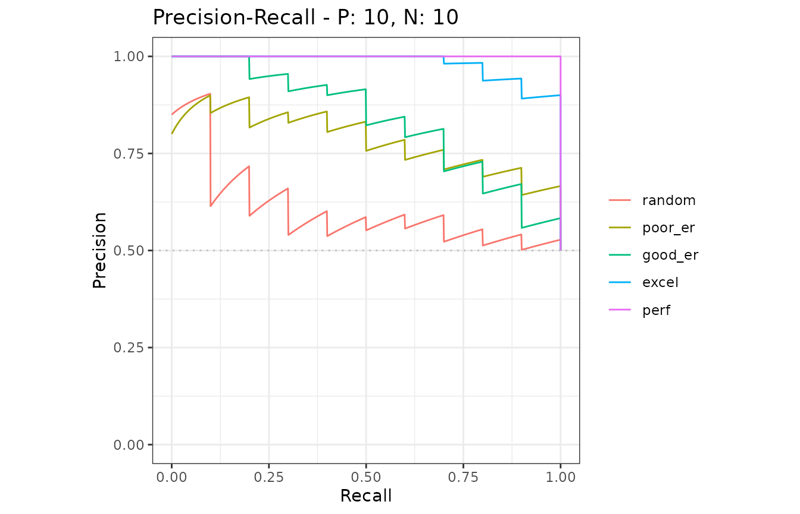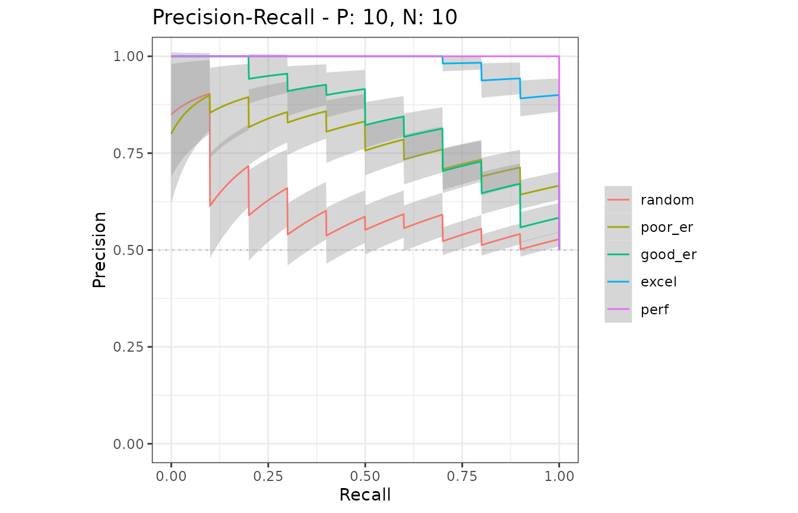
Example of the as.data.frame function
The as.data.frame function also works with this
object.
# Convert smcurves to a data frame
mmcurves.df <- as.data.frame(mmcurves)
# Use knitr::kable to display the result in a table format
knitr::kable(head(mmcurves.df))| x | y | ymin | ymax | modname | type |
|---|---|---|---|---|---|
| 0.000 | 0.000 | 0.0000000 | 0.0000000 | random | ROC |
| 0.000 | 0.125 | 0.0555227 | 0.1944773 | random | ROC |
| 0.001 | 0.125 | 0.0555227 | 0.1944773 | random | ROC |
| 0.002 | 0.125 | 0.0555227 | 0.1944773 | random | ROC |
| 0.003 | 0.125 | 0.0555227 | 0.1944773 | random | ROC |
| 0.004 | 0.125 | 0.0555227 | 0.1944773 | random | ROC |
6. Confidence interval bands
The evalmod function automatically calculates confidence
bands when a model contains multiple test sets in provided dataset.
Confidence intervals are calculated for additional supporting points,
which are specified by the ‘x_bins’ option of the evalmod
function.
Example of confidence bands when x_bins is 2
The dataset smmdat2 contains 20 samples for a single
model/classifier.
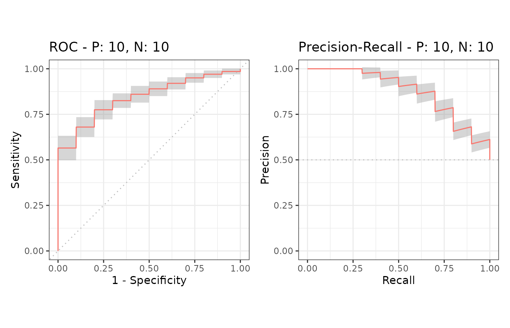
Additional supporting points are calculated for
x = (0, 0.5, 1.0) when x_bins is set to 2.
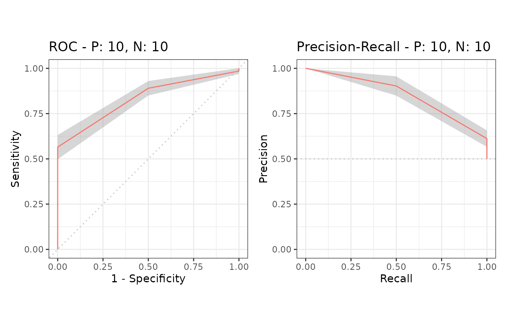
Example of confidence bands when x_bins is 10
Additional supporting points are calculated for
x = (0, 0.1, 0.2, 0.3, 0.4, 0.5, 0.6, 0.7, 0.8, 0.9, 1.0)
when x_bins is set to 10.
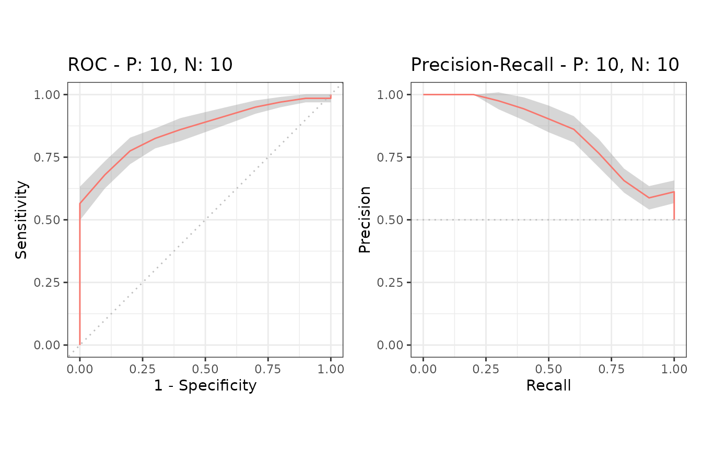
Example of the alpha value
The evalmod function accepts the cb_alpha
option to specify the alpha value of the point-wise confidence bounds
calculation. For instance, 95% confidence bands are calculated when
cb_alpha is 0.05.
# cb_alpha: 0.1 for 90% confidence band
smcurves_cb1 <- evalmod(smmdat2, x_bins = 10, cb_alpha = 0.1)
autoplot(smcurves_cb1)
# cb_alpha: 0.01 for 99% confidence band
smcurves_cb2 <- evalmod(smmdat2, x_bins = 10, cb_alpha = 0.01)
autoplot(smcurves_cb2)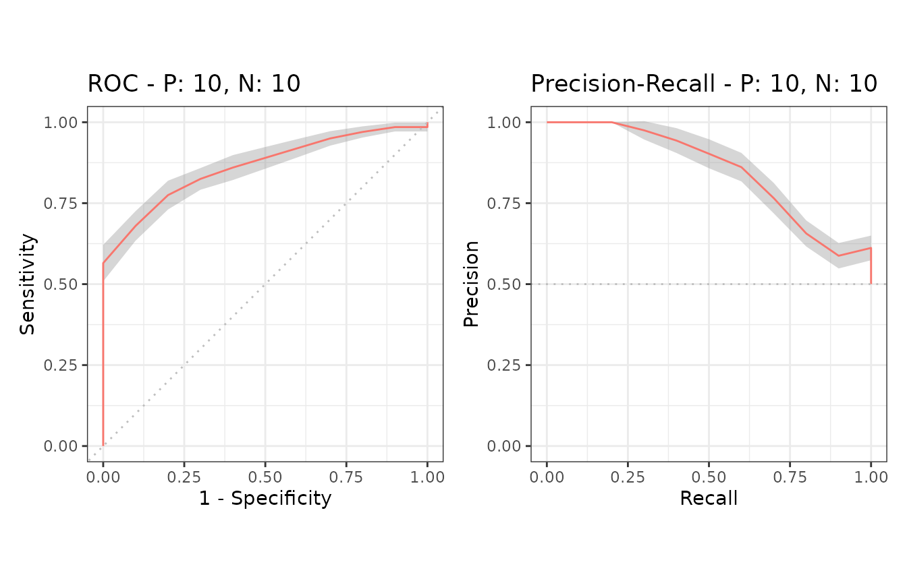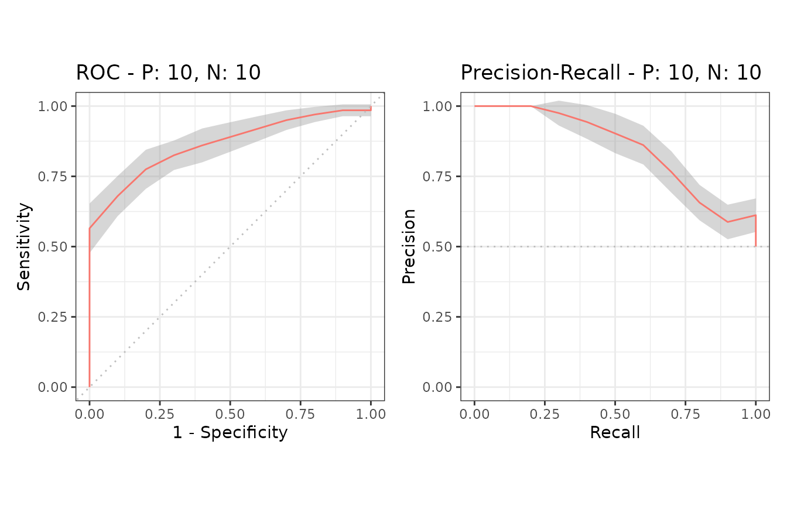
7. Cross validation
The format_nfold function takes a data frame with
scores, label and n-fold columns and convert it to a list for
evalmod and mmdata.
Example of a data frame with 5-fold data
# Load data
data(M2N50F5)
# Use knitr::kable to display the result in a table format
knitr::kable(head(M2N50F5))| score1 | score2 | label | fold |
|---|---|---|---|
| 2.0606025 | 1.0689227 | pos | 1 |
| 0.3066092 | 0.1745491 | pos | 3 |
| 1.5597733 | -1.5666375 | pos | 1 |
| -0.6044989 | 1.1572727 | pos | 3 |
| -0.2229031 | 0.6070042 | pos | 5 |
| -0.7679551 | -1.7908147 | pos | 5 |
Example of the format_nfold function with 5-fold datasets
# Convert data frame to list
nfold_list1 <- format_nfold(
nfold_df = M2N50F5, score_cols = c(1, 2),
lab_col = 3, fold_col = 4
)
# Use column names
nfold_list2 <- format_nfold(
nfold_df = M2N50F5,
score_cols = c("score1", "score2"),
lab_col = "label", fold_col = "fold"
)
# Use the result for evalmod
cvcurves <- evalmod(
scores = nfold_list2$scores, labels = nfold_list2$labels,
modnames = rep(c("m1", "m2"), each = 5),
dsids = rep(1:5, 2)
)
autoplot(cvcurves)
8. Basic performance measures
The evalmod function also calculates basic evaluation
measures - error, accuracy, specificity, sensitivity, and precision.
| Measure | Description |
|---|---|
| error | Error rate |
| accuracy | Accuracy |
| specificity | Specificity, TNR, 1 - FPR |
| sensitivity | Sensitivity, TPR, Recall |
| precision | Precision, PPV |
| mcc | Matthews correlation coefficient |
| fscore | F-score |
Basic measure calculations
The mode = "basic" option makes the evalmod
function calculate the basic evaluation measures instead of performing
ROC and Precision-Recall calculations.
# Calculate basic evaluation measures
mmpoins <- evalmod(mmmdat2, mode = "basic")S3 generics
All the S3 generics except for auc, part
and pauc are effective for the S3 object generated by this
approach.
# Show normalized ranks vs. error rate and accuracy
autoplot(mmpoins, c("error", "accuracy"))
# Show normalized ranks vs. specificity, sensitivity, and precision
autoplot(mmpoins, c("specificity", "sensitivity", "precision"))
# Show normalized ranks vs. Matthews correlation coefficient and F-score
autoplot(mmpoins, c("mcc", "fscore"))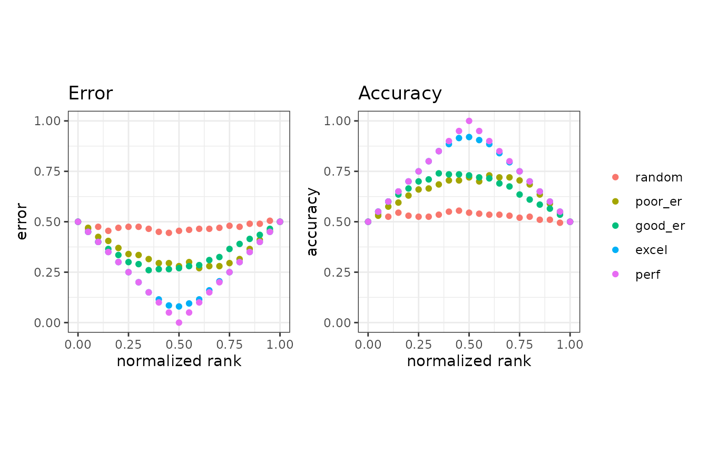 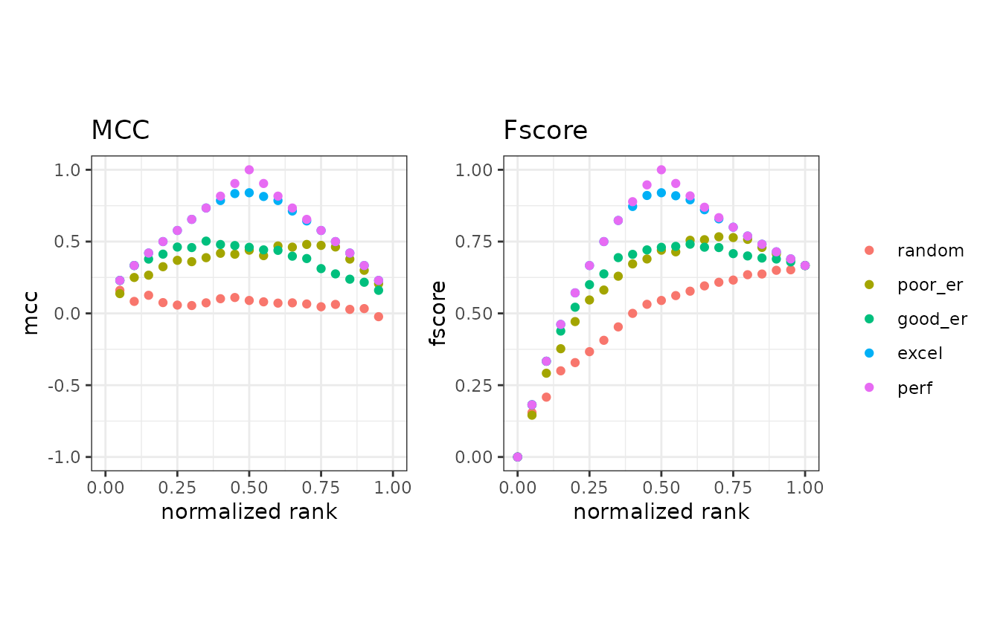
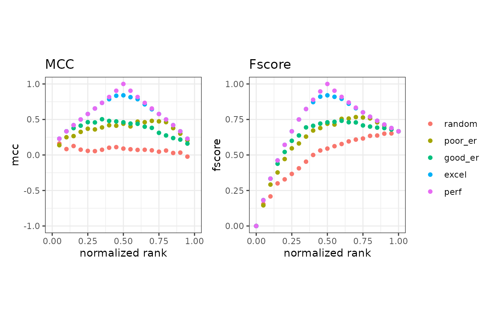
Normalized ranks and predicted scores
In addition to the basic measures, the autoplot function
can plot normalized ranks vs. scores and labels.
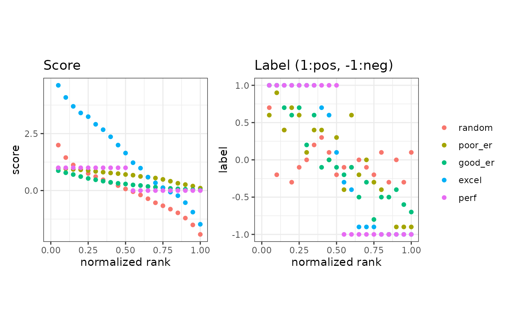
Example of the as.data.frame function
The as.data.frame function also works for the precrec
objects of the basic measures.
# Convert mmpoins to a data frame
mmpoins.df <- as.data.frame(mmpoins)
# Use knitr::kable to display the result in a table format
knitr::kable(head(mmpoins.df))| x | y | ymin | ymax | modname | type |
|---|---|---|---|---|---|
| 0.00 | NA | NA | NA | random | score |
| 0.05 | 2.0436212 | 1.7508155 | 2.336427 | random | score |
| 0.10 | 1.4572679 | 1.2662236 | 1.648312 | random | score |
| 0.15 | 1.1564246 | 0.9935827 | 1.319266 | random | score |
| 0.20 | 0.9931815 | 0.8524451 | 1.133918 | random | score |
| 0.25 | 0.8506589 | 0.7116918 | 0.989626 | random | score |
9. Partial AUCs
The part function calculates partial AUCs and
standardized partial AUCs of both ROC and precision-recall curves.
Standardized pAUCs (spAUCs) are standardized to the score range between
0 and 1.
partial AUC calculations
It requires an S3 object produced by the evalmod
function and uses xlim and ylim to specify the
partial area of your choice. The pauc function outputs a
data frame with the pAUC scores.
# Calculate ROC and Precision-Recall curves
curves <- evalmod(scores = P10N10$scores, labels = P10N10$labels)
# Calculate partial AUCs
curves.part <- part(curves, xlim = c(0.0, 0.25))
# Retrieve a dataframe of pAUCs
paucs.df <- pauc(curves.part)
# Use knitr::kable to display the result in a table format
knitr::kable(paucs.df)| modnames | dsids | curvetypes | paucs | spaucs |
|---|---|---|---|---|
| m1 | 1 | ROC | 0.1006250 | 0.4025000 |
| m1 | 1 | PRC | 0.2345849 | 0.9383396 |
S3 generics
All the S3 generics are effective for the S3 object generated by this approach.
# Show ROC and Precision-Recall curves
autoplot(curves.part)10. Fast AUC (ROC) calculation
The area under the ROC curve can be calculated from the U statistic, which is the test statistic of the Mann–Whitney U test.
AUC calculation with the U statistic
The evalmod function calculates AUCs with the U
statistic when mode = ‘aucroc’.
# Calculate AUC (ROC)
aucs <- evalmod(scores = P10N10$scores, labels = P10N10$labels, mode = "aucroc")
# Convert to data.frame
aucs.df <- as.data.frame(aucs)
# Use knitr::kable to display the result in a table format
knitr::kable(aucs.df)| modnames | dsids | aucs | ustats |
|---|---|---|---|
| m1 | 1 | 0.72 | 72 |
11. Confidence intervals of AUCs
The auc_ci function calculates confidence intervals of
the calculated ROCs by the evalmod function.
Default CI calculation with normal distribution and alpha=0.05
The auc_ci function calculates CIs for both ROC and
precision-recall AUCs. The specified data must contain multiple
datasets, such as cross-validation data.
# Calculate CI of AUCs with normal distibution
auc_ci <- auc_ci(smcurves)
# Use knitr::kable to display the result in a table format
knitr::kable(auc_ci)| modnames | curvetypes | mean | error | lower_bound | upper_bound | n |
|---|---|---|---|---|---|---|
| m1 | ROC | 0.7985000 | 0.0304061 | 0.7680939 | 0.8289061 | 20 |
| m1 | PRC | 0.8311066 | 0.0341643 | 0.7969423 | 0.8652710 | 20 |
CI calculation with a different alpha (0.01)
The auc_ci function accepts a different significance
level.
# Calculate CI of AUCs with alpha = 0.01
auc_ci_a <- auc_ci(smcurves, alpha = 0.01)
# Use knitr::kable to display the result in a table format
knitr::kable(auc_ci_a)| modnames | curvetypes | mean | error | lower_bound | upper_bound | n |
|---|---|---|---|---|---|---|
| m1 | ROC | 0.7985000 | 0.0399603 | 0.7585397 | 0.8384603 | 20 |
| m1 | PRC | 0.8311066 | 0.0448996 | 0.7862071 | 0.8760062 | 20 |
CI calculation with t-distribution
The auc_ci function accepts either normal or
t-distribution for CI calculation.
# Calculate CI of AUCs t-distribution
auc_ci_t <- auc_ci(smcurves, dtype = "t")
# Use knitr::kable to display the result in a table format
knitr::kable(auc_ci_t)| modnames | curvetypes | mean | error | lower_bound | upper_bound | n |
|---|---|---|---|---|---|---|
| m1 | ROC | 0.7985000 | 0.0324703 | 0.7660297 | 0.8309703 | 20 |
| m1 | PRC | 0.8311066 | 0.0364837 | 0.7946229 | 0.8675904 | 20 |
12. Balanced and imbalanced datasets
It is easy to simulate various scenarios, such as balanced
vs. imbalanced datasets, by using the evalmod and
create_sim_samples functions.
Data preparation
# Balanced dataset
samps5 <- create_sim_samples(100, 100, 100, "all")
simmdat1 <- mmdata(samps5[["scores"]], samps5[["labels"]],
modnames = samps5[["modnames"]], dsids = samps5[["dsids"]]
)
# Imbalanced dataset
samps6 <- create_sim_samples(100, 25, 100, "all")
simmdat2 <- mmdata(samps6[["scores"]], samps6[["labels"]],
modnames = samps6[["modnames"]], dsids = samps6[["dsids"]]
)ROC and Precision-Recall calculations
The evalmod function automatically detects multiple
models and multiple test datasets.
13. Citation
Precrec: fast and accurate precision-recall and ROC curve calculations in R
Takaya Saito; Marc Rehmsmeier
Bioinformatics 2017; 33 (1): 145-147.
14. External links
Classifier evaluation with imbalanced datasets - our web site that contains several pages with useful tips for performance evaluation on binary classifiers.
The Precision-Recall Plot Is More Informative than the ROC Plot When Evaluating Binary Classifiers on Imbalanced Datasets - our paper that summarized potential pitfalls of ROC plots with imbalanced datasets and advantages of using precision-recall plots instead.